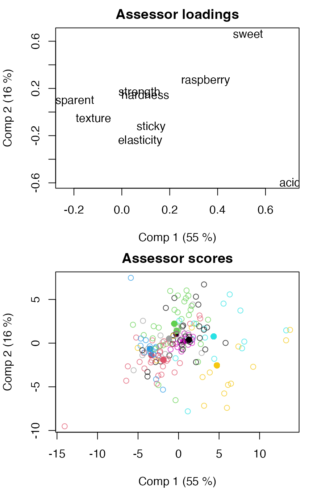
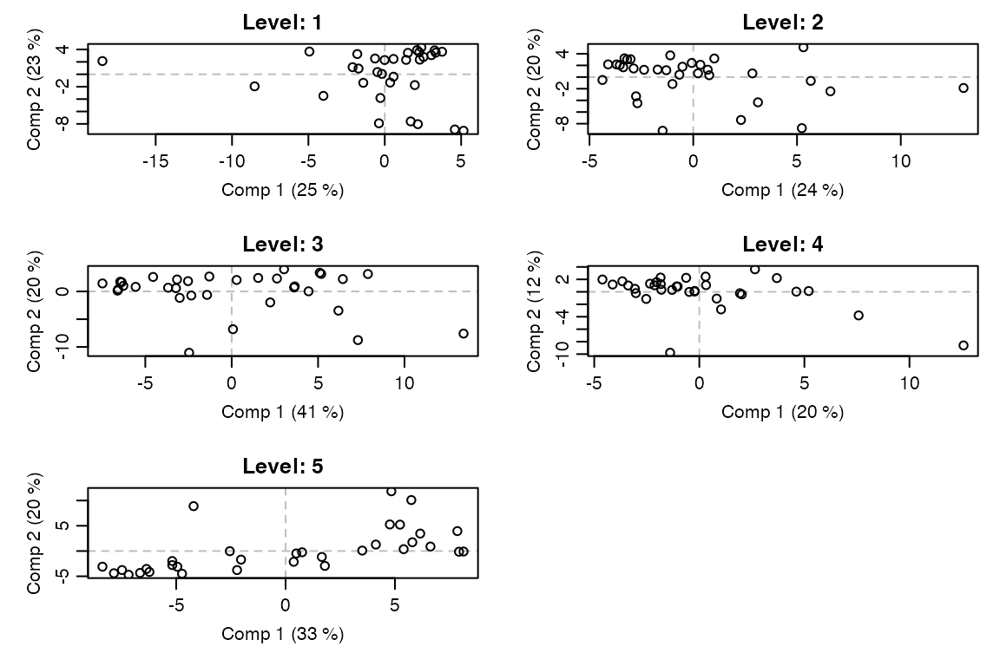
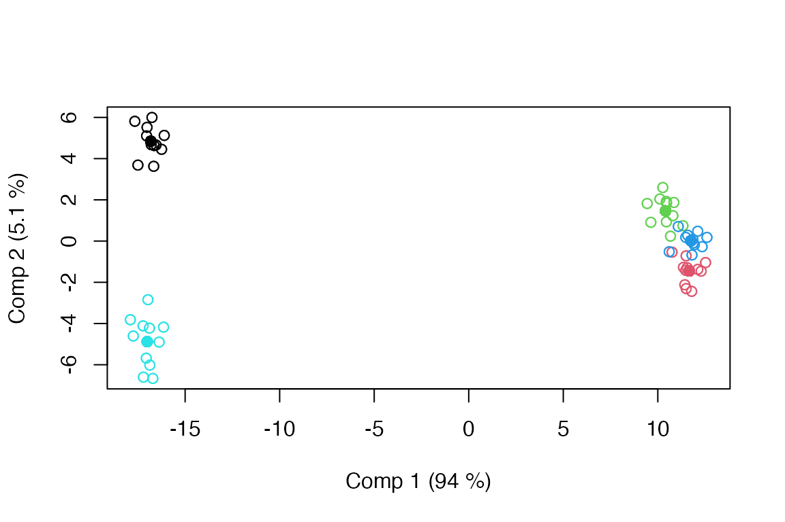

# Start the HDANOVA R package
library(HDANOVA)
#>
#> Attaching package: 'HDANOVA'
#> The following object is masked from 'package:stats':
#>
#> loadingsAnalysis of Variance Simultaneous Component Analysis (ASCA)
The ANOVA part of ASCA includes all the possible variations of ANOVA demonstrated in the ANOVA section and more. Also, generalized linear models (GLM) can be used. The following theory will be exemplified:
- Basic ASCA
- Permutation testing
- Random effects
- Scores and loadings
- Data and confidence ellipsoids
- Combined effects
- Numeric effects
- ANOVA-PCA (APCA)
- PC-ANOVA
- MSCA
- LiMM-PCA
Basic ASCA
The ANOVA part of ASCA includes all the possible variations of ANOVA demonstrated in the ANOVA vignette and more. Also generalized linear models (GLM) can be used. We start by demonstrating ASCA with a fixed effect model of two factors with interactions and ordinary PCA on the effect matrices.
# Load Candy data
data(candies)
# Fit ASCA model
mod <- asca(assessment ~ candy*assessor, data=candies)
summary(mod)
#> Anova Simultaneous Component Analysis fitted using 'lm' (Linear Model)
#> - SS type II, sum coding, restricted model, least squares estimation
#> Sum.Sq. Expl.var.(%)
#> candy 33416.66 74.48
#> assessor 1961.37 4.37
#> assessor:candy 3445.73 7.68
#> Residuals 6043.52 13.47The summary shows that the candy effect is the largest by far.
Permutation testing
To get more insight, we can perform permutation testing of the factors. Here we use approximate permutation.
# Permutation testing (default = 1000 permutations, if not specified)
mod <- asca(assessment ~ candy*assessor, data=candies, permute=TRUE)
summary(mod)
#> Anova Simultaneous Component Analysis fitted using 'lm' (Linear Model)
#> - SS type II, sum coding, restricted model, least squares estimation, 1000 permutations
#> Sum.Sq. Expl.var.(%) p-value
#> candy 33416.66 74.48 0
#> assessor 1961.37 4.37 0
#> assessor:candy 3445.73 7.68 0
#> Residuals 6043.52 13.47 NAHere we see that all effects are significant, where the Candy effect is the dominating one. (The P-values are rounded from 0.001 to 0 in the print). This can also be visualised by looking at the sums-of-squares values obtained under permutation compared to the original value.
permutationplot(mod, factor = "assessor")Random effects
One can argue that the assessors are random effects, thus should be handled as such in the model. We can do this by adding r() around the assessor term. See also LiMM-PCA below for the REML estimation version.
# Fit ASCA model with random assessor
mod.mixed <- asca(assessment ~ candy*r(assessor), data=candies, permute=TRUE)
summary(mod.mixed)
#> Anova Simultaneous Component Analysis fitted using 'lmm' (Linear Mixed Model)
#> - SS type II, sum coding, restricted model, least squares estimation, 1000 permutations
#> Sum.Sq. Expl.var.(%) p-value
#> candy 33416.66 74.48 0
#> assessor 1961.37 4.37 0
#> assessor:candy 3445.73 7.68 0
#> Residuals 6043.52 13.47 NAScores and loadings
The effects can be visualised through, e.g., loading and score plots to assess the relations between variables, objects and factors. If a factor is not specified, the first factor is plotted.
par.old <- par(mfrow=c(2,1), mar=c(4,4,2,1))
loadingplot(mod, scatter=TRUE, labels="names", main="Candy loadings")
scoreplot(mod, main="Candy scores")
par(par.old)A specific factor can be plotted by specifying the factor name or number.
par.old <- par(mfrow=c(2,1), mar=c(4,4,2,1))
loadingplot(mod, factor="assessor", scatter=TRUE, labels="names", main="Assessor loadings")
scoreplot(mod, factor="assessor", main="Assessor scores")
par(par.old)Score plots can be modified, e.g., omitting backprojections or adding spider plots.
par.old <- par(mfrow=c(2,1), mar=c(4,4,2,1))
scoreplot(mod, factor="assessor", main="Assessor scores", projections=FALSE)
scoreplot(mod, factor="assessor", main="Assessor scores", spider=TRUE)
par(par.old)And scores and loadings can be extracted for further analysis.
L <- loadings(mod, factor="candy")
head(L)
#> Comp 1 Comp 2 Comp 3 Comp 4
#> transparent 0.3927649 0.0279168248 -0.30598369 0.77398098
#> acid -0.1649285 -0.8042012208 0.47650301 0.24192158
#> sweet -0.2235032 0.4607791525 0.52330000 -0.01751194
#> raspberry -0.2277610 0.3663430297 0.35862959 0.50808527
#> texture -0.4302019 -0.0004154248 -0.13000106 0.22107937
#> strength 0.3653312 0.0694885591 0.09828578 -0.09582978
S <- scores(mod, factor="candy")
head(S)
#> Comp 1 Comp 2 Comp 3 Comp 4
#> 1 -16.81343 4.844756 -0.2914198 0.1811588
#> 2 -16.81343 4.844756 -0.2914198 0.1811588
#> 3 -16.81343 4.844756 -0.2914198 0.1811588
#> 4 -16.81343 4.844756 -0.2914198 0.1811588
#> 5 -16.81343 4.844756 -0.2914198 0.1811588
#> 6 -16.81343 4.844756 -0.2914198 0.1811588Data ellipsoids and confidence ellipsoids
To emphasize factor levels or assess factor level differences, we can add data ellipsoids or confidence ellipsoids to the score plot. The confidence ellipsoids are built on the assumption of balanced data, and their theories are built around crossed designs.
par.old <- par(mfrow=c(2,1), mar=c(4,4,2,1))
scoreplot(mod, ellipsoids="data", factor="candy", main="Data ellipsoids")
scoreplot(mod, ellipsoids="confidence", factor="candy", main="Confidence ellipsoids")
par(par.old)If we repeat this for the mixed model, we see that both types of ellipsoids change together with the change in denominator term in the underlying ANOVA model. It should be noted that the theory for confidence ellipsoids in mixed models is not fully developed, so interpretation should be done with caution.
par.old <- par(mfrow=c(2,1), mar=c(4,4,2,1))
scoreplot(mod.mixed, ellipsoids="data", factor="candy", main="Data ellipsoids")
scoreplot(mod.mixed, ellipsoids="confidence", factor="candy", main="Confidence ellipsoids")
par(par.old)Combined effects
In some cases, it can be of interest to combine effects in ASCA. Here, we use an example with the Caldana data where we combine the light effect with the time:light interaction using the comb() function.
# Load Caldana data
data(caldana)
# Combined effects
mod.comb <- asca(compounds ~ time + comb(light + light:time), data=caldana)
summary(mod.comb)
#> Anova Simultaneous Component Analysis fitted using 'lm' (Linear Model)
#> - SS type II, sum coding, restricted model, least squares estimation
#> Sum.Sq. Expl.var.(%)
#> time 154.58 9.69
#> light+light:time 349.64 21.92
#> Residuals 1091.14 68.39When combined effects have a time factor, the scores can be plotted against time.
# Scores plotted as a function of time
par.old <- par(mfrow=c(2,1), mar = c(4,4,1,1))
timeplot(mod.comb, factor="light", time="time", comb=2, comp=1, x_time=TRUE)
timeplot(mod.comb, factor="light", time="time", comb=2, comp=2, x_time=TRUE)
par(par.old)Quantitative effects
Quantitative effects, so-called covariates, can also be included in a model, though their use in ASCA are limited to ANOVA estimation and explained variance, not being used in subsequent PCA or permutation testing. We demonstrate this using the Caldana data again, but now recode the time effect to a quantitative effect, meaning it will be handled as a linear continuous effect.
caldanaNum <- caldana
caldanaNum$time <- as.numeric(as.character(caldanaNum$time))
mod.num <- asca(compounds ~ time*light, data = caldanaNum)
summary(mod.num)
#> Anova Simultaneous Component Analysis fitted using 'lm' (Linear Model)
#> - SS type II, sum coding, restricted model, least squares estimation
#> Sum.Sq. Expl.var.(%)
#> time 55.42 3.47
#> light 102.49 6.42
#> light:time 109.56 6.87
#> Residuals 1327.90 83.23ANOVA-PCA (APCA)
APCA differs from ASCA by adding the error term to the model before performing PCA instead of backprojecting errors afterwards.
# Fit APCA model
modp <- apca(assessment ~ candy*assessor, data=candies)
summary(modp)
#> Anova Principal Component Analysis fitted using 'lm' (Linear Model)
#> - SS type II, sum coding, restricted model, least squares estimation
#> Sum.Sq. Expl.var.(%)
#> candy 33416.66 74.48
#> assessor 1961.37 4.37
#> assessor:candy 3445.73 7.68
#> Residuals 6043.52 13.47Plot scores and loadings.
par.old <- par(mfrow=c(2,1), mar=c(4,4,2,1))
loadingplot(modp, scatter=TRUE, labels="names", main="Candy loadings")
scoreplot(modp, main="Candy scores")
par(par.old)PC-ANOVA
In PC-ANOVA, a PCA is first applied to the data before the scores are subjected to ANOVA, effectively reversing the roles in ASCA. This means there will be one or more ANOVA tables in the summary of the output. In this example, we have chosen to use the number of components that explain at least 90% of the variation of the data.
mod.pc <- pcanova(assessment ~ candy * assessor, data = candies, ncomp = 0.9)
print(mod.pc)
#> PC-ANOVA - Principal Components Analysis of Variance
#>
#> Call:
#> pcanova(formula = assessment ~ candy * assessor, data = candies, ncomp = 0.9)
summary(mod.pc)
#> PC-ANOVA - Principal Components Analysis of Variance
#>
#> Call:
#> pcanova(formula = assessment ~ candy * assessor, data = candies, ncomp = 0.9)
#> $`Comp. 1`
#> Anova Table (Type II tests)
#>
#> Response: assessment
#> Sum Sq Df F value Pr(>F)
#> candy 31470.6 4 780.1762 < 2e-16 ***
#> assessor 224.9 10 2.2304 0.02089 *
#> candy:assessor 707.7 40 1.7545 0.01158 *
#> Residuals 1109.3 110
#> ---
#> Signif. codes: 0 '***' 0.001 '**' 0.01 '*' 0.05 '.' 0.1 ' ' 1
#>
#> $`Comp. 2`
#> Anova Table (Type II tests)
#>
#> Response: assessment
#> Sum Sq Df F value Pr(>F)
#> candy 1573.8 4 33.1604 < 2.2e-16 ***
#> assessor 278.3 10 2.3455 0.0150274 *
#> candy:assessor 1053.3 40 2.2193 0.0005888 ***
#> Residuals 1305.2 110
#> ---
#> Signif. codes: 0 '***' 0.001 '**' 0.01 '*' 0.05 '.' 0.1 ' ' 1
#>
#> $`Comp. 3`
#> Anova Table (Type II tests)
#>
#> Response: assessment
#> Sum Sq Df F value Pr(>F)
#> candy 307.12 4 7.646 1.790e-05 ***
#> assessor 1006.62 10 10.024 8.574e-12 ***
#> candy:assessor 484.02 40 1.205 0.2229
#> Residuals 1104.61 110
#> ---
#> Signif. codes: 0 '***' 0.001 '**' 0.01 '*' 0.05 '.' 0.1 ' ' 1When creating score and loading plots for PC-ANOVA, the ‘global’ scores and loadings will be shown, but the factors can still be used for manipulating the symbols.
par.old <- par(mfrow=c(2,1), mar=c(4,4,2,1))
loadingplot(mod.pc, scatter=TRUE, labels="names", main="Global loadings")
scoreplot(mod.pc, main="Global scores")
par(par.old)MSCA
Multilevel Simultaneous Component Analysis (MSCA) is a version of ASCA that assumes a single factor to be used as a between-individuals factor, while the the within-individuals is assumed implicitly.
# Default MSCA model with a single factor
mod.msca <- msca(assessment ~ candy, data=candies)
summary(mod.msca)
#> Multilevel Simultaneous Component Analysis fitted using 'lm' (Linear Model)
#> - SS type II, sum coding, restricted model, least squares estimation
#> Sum.Sq. Expl.var.(%)
#> Between 33416.66 74.48
#> Within 11450.62 25.52Scoreplots can be created for the between-individuals factor and the within-individuals factor, and for each level of the within-individuals factor.
# Scoreplot for between-individuals factor
scoreplot(mod.msca)
# Scoreplot of within-individuals factor
scoreplot(mod.msca, factor="within")
# .. per factor level
par.old <- par(mfrow=c(3,2), mar=c(4,4,2,1), mgp=c(2,0.7,0))
for(i in 1:length(mod.msca$scores.within))
scoreplot(mod.msca, factor="within", within_level=i,
main=paste0("Level: ", names(mod.msca$scores.within)[i]),
panel.first=abline(v=0,h=0,col="gray",lty=2))
par(par.old)
LiMM-PCA
A version of LiMM-PCA is also implemented in HDANOVA. It combines REML-estimated mixed models with PCA and scales the back-projected errors according to degrees of freedom or effective dimensions (user choice).
# Default LiMM-PCA model with two factors and interaction, 8 PCA components
mod.reml <- limmpca(assessment ~ candy*r(assessor), data=candies, pca.in=8)
#> boundary (singular) fit: see help('isSingular')
#> boundary (singular) fit: see help('isSingular')
summary(mod.reml)
#> LiMM-PCA fitted using 'lmm' (Linear Mixed Model)
#> - SS type II, sum coding, restricted model, REML estimation
#> Sum.Sq. Expl.var.(%)
#> candy 33415.98 74.73
#> assessor:candy 697.41 1.56
#> assessor 874.25 1.96
#> Residuals 7619.78 17.04
scoreplot(mod.reml, factor="candy")
One can also use least squares estimation without REML. This affects the random effects and scaling of backprojections.
# LiMM-PCA with least squares estimation and 8 PCA components
mod.ls <- limmpca(assessment ~ candy*r(assessor), data=candies, REML=NULL, pca.in=8)
summary(mod.ls)
#> LiMM-PCA fitted using 'lmm' (Linear Mixed Model)
#> - SS type II, sum coding, restricted model, least squares estimation
#> Sum.Sq. Expl.var.(%)
#> candy 33415.98 74.73
#> assessor 1948.75 4.36
#> assessor:candy 3419.04 7.65
#> Residuals 5934.46 13.27
scoreplot(mod.ls)Repeated measures
We revisit the simulated data from the ANOVA vignette to demonstrate ASCA with repeated measures. The data are subset, a time effect is added, and the response is extended to the multivariate case.
set.seed(123)
# Original simulation
dat <- data.frame(
feed = factor(rep(rep(c("low","high"), each=6), 4)),
breed = factor(rep(c("NRF","Hereford","Angus"), 16)),
bull = factor(rep(LETTERS[1:4], each = 12)),
daughter = factor(rep(letters[1:4], 12)),
age = round(rnorm(48, mean = 36, sd = 5))
)
dat$yield <- 150*with(dat, 10 + 3 * as.numeric(feed) + as.numeric(breed) +
2 * as.numeric(bull) + 1 * as.numeric(sample(dat$daughter, 48)) +
0.5 * age + rnorm(48, sd = 2))
# Extended to repeated measures
long <- dat[c(1:4,9:12), c("feed", "daughter", "yield")]
long <- rbind(long, long, long)
long$time <- factor(rep(1:3, each=8))
long$yield <- long$yield + rnorm(24, sd = 100) + rep(c(-200,0,200), each=8)
# Made multiresponse (no added structure, only noise)
long$yield <- I(matrix(rep(long$yield,10),nrow=length(long$yield),ncol=10)) + rnorm(length(long$yield)*10)Analysing the data with ASCA using the least squares approach.
# Least squares mixed model ASCA
mod.rm.asca <- asca(yield ~ r(daughter) + feed*r(time), data = long)
summary(mod.rm.asca)
#> Anova Simultaneous Component Analysis fitted using 'lmm' (Linear Mixed Model)
#> - SS type II, sum coding, restricted model, least squares estimation
#> Sum.Sq. Expl.var.(%)
#> daughter 25823243.07 56.94
#> feed 2943221.37 6.49
#> time 4309830.00 9.50
#> feed:time 57834.68 0.13
#> Residuals 12215570.92 26.94Corresponding analysis using the LiMM-PCA approach with REML estimation.
# REML mixed model LiMM-PCA
mod.rm.limmpca <- limmpca(yield ~ r(daughter) + feed*r(time), data = long, pca.in=2)
#> boundary (singular) fit: see help('isSingular')
#> boundary (singular) fit: see help('isSingular')
#> boundary (singular) fit: see help('isSingular')
#> boundary (singular) fit: see help('isSingular')
summary(mod.rm.limmpca)
#> LiMM-PCA fitted using 'lmm' (Linear Mixed Model)
#> - SS type II, sum coding, restricted model, REML estimation
#> Sum.Sq. Expl.var.(%)
#> feed 2943219.99 6.49
#> feed:time 0.34 0.00
#> daughter 21672823.11 47.79
#> time 1905738.81 4.20
#> Residuals 12938703.95 28.53